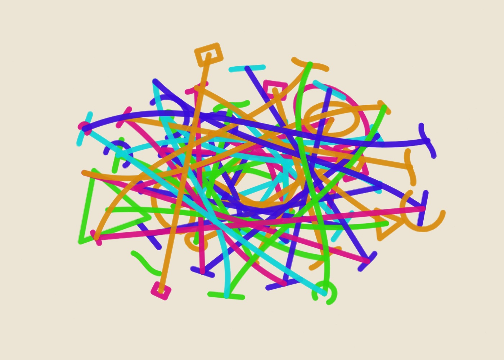

01
Golden Trajectories — Study 01
Golden Trajectories generative marker artwork using seed AA-20261005-01-37765, 87% golden-ratio adherence, paint pen and the spectrum palette.
- Seed
- AA-20261005-01-37765
- Series
- Golden Trajectories
- φ adherence
- 87%
- Pen
- paint
- Palette
- spectrum